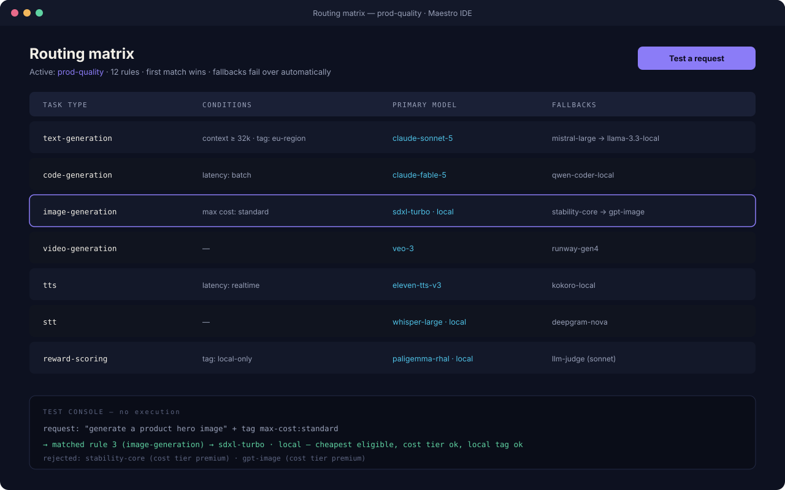

Core · about 20 minutes
Master the routing matrix
The matrix is Maestro's answer to a simple problem: different tasks deserve different models, and hard-coding models into workflows makes both fragile. Route by task type once; change models forever after in one place.

How resolution works
When a node routes by task type, Maestro walks the enabled rules for that type, top to bottom, and picks the first whose conditions all hold. The chosen rule contributes a primary model and an ordered fallback chain. Every decision is logged with its reasons — which rule matched, which models were rejected and why.
Route media in seconds
- Open Routing. The default matrix already has one row per task type:
image-generation,video-generation,audio-generation,tts,stt,embedding, and the text/code rows. - On the
image-generationrow, open the Primary dropdown and pick your image model. That's it — every image node and every agent that generates images now uses it. - Do the same for
tts(say, ElevenLabs hosted) andstt(say, local Whisper). Mixing hosted and local per task is the point.
Add conditions
Conditions refine when a rule applies. All conditions on a rule must hold:
- Minimum context window — skip small models for long-document tasks.
- Max cost tier — free / cheap / standard / premium ceilings.
- Required tags — e.g.
local-onlyfor sensitive projects,eu-regionfor data-boundary rules. The router refuses to route tagged work to untagged models. - Input has image — send vision-bearing requests to models that can see.
- Latency class — realtime rows for interactive work, batch rows for overnight jobs.
Stack two rules for the same task type: a strict rule first (long-context, premium), a general rule below it. First match wins.
Design good fallback chains
- Give every important rule at least one fallback — the demo that survives a provider outage is the one with a chain.
- Order matters: put the closest-quality substitute first and a local model last as the always-available floor.
- Enable prefer cheapest on rules where quality is fungible — the router re-orders eligible candidates by estimated cost.
Test without spending
- Open the test console in the Routing view.
- Describe a request — "transcribe this voice memo", attach-type: audio — and read the decision: matched rule, chosen model, rejected candidates with reasons.
- Keep multiple named matrices —
cheap-devfor iteration,prod-qualityfor real runs — and switch per run. Matrices are project files; diff them in git like everything else.
Where to go next
- MRGD tuning — the
reward-scoringrow routes your reward models too. - Your first real workflow — see routing decisions live in a run.